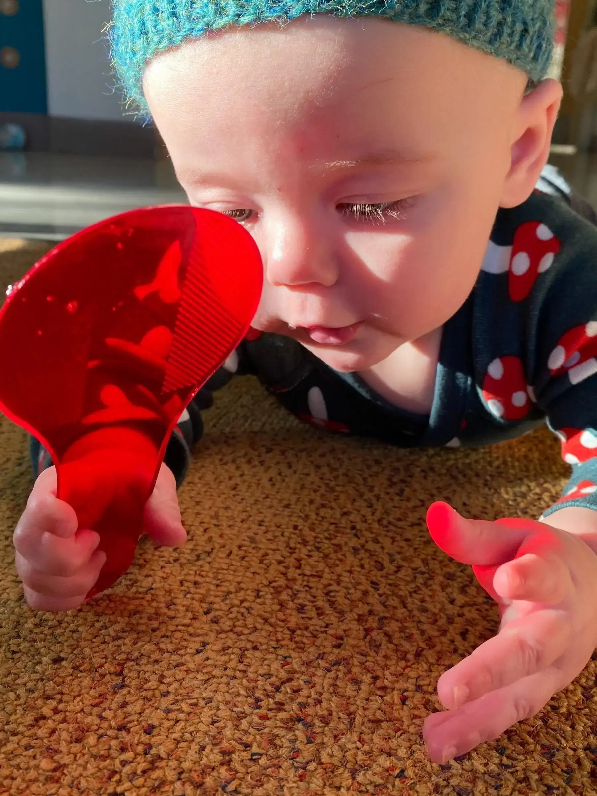

3–11mo
Little Rainbow
Our infant room is built around each baby's individual pace. With a low teacher-to-child ratio, warm daily routines, floor time, and gentle sensory exploration, Little Rainbow is designed to make the very earliest months of care feel safe, unhurried, and full of wonder.